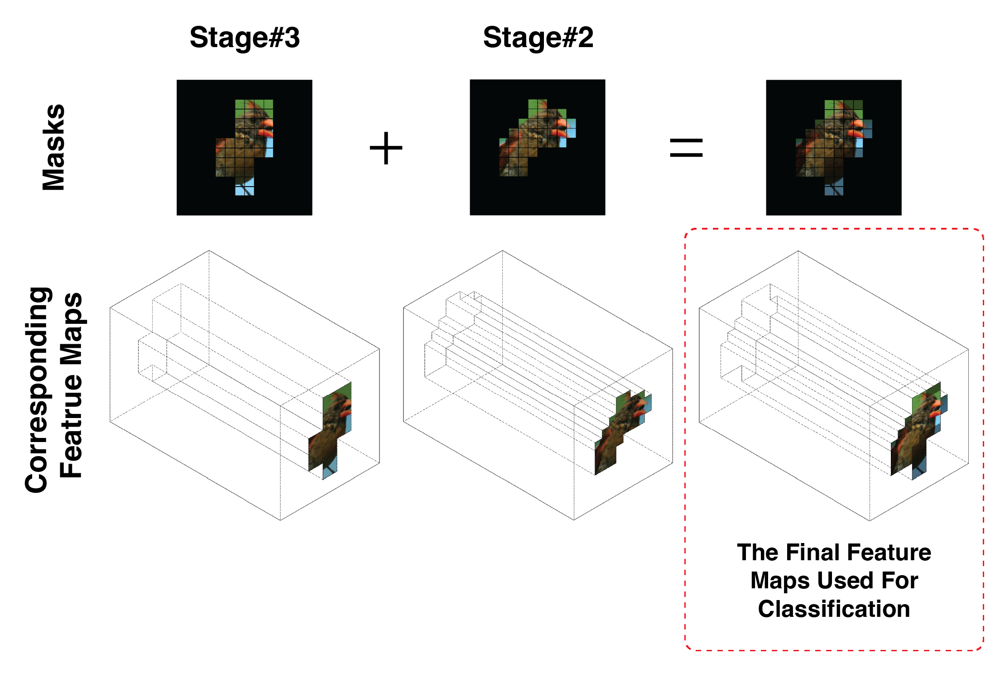

Introduction
It has been observed that deep neural networks use spurious shortcut features alongside genuine ones — backgrounds instead of birds, context instead of objects. AIM amends this at training time: a self-supervised masking mechanism forces the network to make its decision from a small, sample-specific subset of spatial features, and to keep exactly the features that genuinely support the prediction. The result is a model that is inherently interpretable — its masks are its explanation — and, perhaps surprisingly, more accurate.
AIM models are released and ready to use — one line to load, one line to get predictions together with the masks:
Checkpoints for CUB-200, TravelingBirds and Waterbirds (25% and 35% active-area variants) are available on the releases page, with a download script and inference example in the repository.
Method
AIM augments a standard backbone with a top-down path. At selected encoding stages, a lightweight mask estimator predicts a sample-specific binary mask that selects which spatial features may contribute to the decision. During training, an annealed active-area objective gradually shrinks the allowed mask area, so the network learns to keep only the features that genuinely support the prediction — supervised by nothing but the image label.
The AIM architecture. Mask estimators at multiple encoding stages produce binary masks that gate the top-down feature maps used for classification.
100% sparse feature maps
By employing binary mask estimators as a feature-selection mechanism, AIM makes its final decision from spatially sparse feature maps. Below: the masks produced at two stages of a ConvNeXt+AIM model, the resulting sparse feature maps (first two columns), and the final merged feature maps used for classification (last column).

Model: ConvNeXt-tiny with AIM (2 stages, 35% active area).
Mask evolution during training
How the learned masks evolve across training epochs, for representative images from Hard ImageNet, ImageNet-100, and Waterbirds-100. Shown are the masks from two model stages and their element-wise merged mask — the spatial regions preserved in the final feature maps.
Model: ConvNeXt-tiny with AIM (2 stages, 35% active area).
Accuracy and interpretability
(Hover over the image to magnify)
Results.
Across general-purpose (ImageNet-100, Hard ImageNet) and fine-grained (Waterbirds, TravelingBirds) benchmarks, AIM improves both classification accuracy and attribution localization (EPG score) over strong baselines — consistently, across backbones.
Citation
@misc{alshami2025aimamendinginherentinterpretability,
title={AIM: Amending Inherent Interpretability via Self-Supervised Masking},
author={Eyad Alshami and Shashank Agnihotri and Bernt Schiele and Margret Keuper},
year={2025},
eprint={2508.11502},
archivePrefix={arXiv},
primaryClass={cs.CV},
url={https://arxiv.org/abs/2508.11502},
}